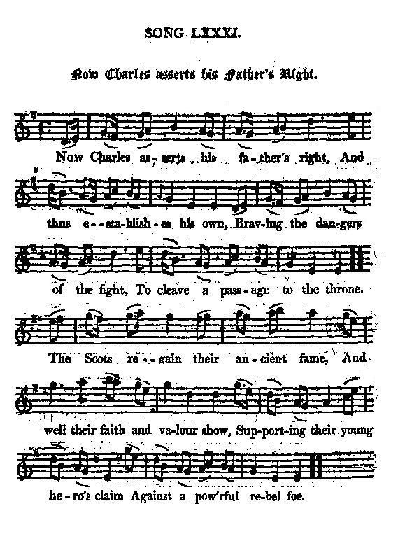

Now Charles asserts his father's right
Charles fait valoir ses droits
Author unknown
Tune - Mélodie"Now Charles asserts his father's right"
from Hogg's "Jacobite Relics" 2nd Series N°81, page 159
Sequenced by Christian Souchon

|
To the tune: "Was copied from Sir W. Scott's collection of loose papers. The air is taken at random, I forgot whence." Hogg in "Jacobite Relics, 2nd series", 1821 |
A propos de la mélodie: "Copié sur l'un des feuillets détachés de la collection de Sir Walter Scott. Quant à la mélodie, je ne sais plus où je l'ai prise." Hogg in "Jacobite Relics, 2nd series", 1821 |

|
NOW CHARLES ASSERTS HIS FATHER'S RIGHT 1. Now Charles asserts his father's right, And thus establishes his own, Braving the dangers of the fight, To cleave a passage to the throne. The Scots regain their ancient fame, And well their faith and valour show Supporting their young hero's claim Against a pow'rful rebel foe. 2. The God of battle shakes his arm, And makes the doubtful victory shine ; A panic dread their foes disarm : Who can oppose the will divine ? The rebels shall at length confess Th' undoubted justice of the claim, When lisping babes shall learn to bless The long-forgotten Stuart's name. Source: "The Jacobite Relics of Scotland, being the Songs, Airs and Legends of the Adherents to the House of Stuart" collected by James Hogg, volume 2 published in Edinburgh by William Blackwood in 1821. |
CHARLES FAIT VALOIR SES DROITS 1. Charles fait valoir ses droits, Ceux de son père, le roi, Bravant pour ce faire les dangers du combat. Charles fait valoir ses droits, Ceux de son père, le roi, Bientôt jusqu'au trône un passage il se fraiera. L'antique gloire des Scots, A l'appel de leur héros Renaît dès qu'ils montrent leur foi, leur ardeur; L'antique gloire des Scots A l'appel de leur héros, Dans la lutte contre le puissant usurpateur. 2. C'est Mars qui soutient son bras Et convie Victoria, Indécise, à paraître et à jeter l'effroi. C'est Mars qui soutient son bras Et convie Victoria. Qui donc s'opposerait à la divine loi? Et les rebelles devront Honorer ses prétentions, Quand les enfants auront appris à bénir - Et les rebelles devront Honorer ses prétentions - Le nom de Stuart longtemps banni de leur souvenir. (Trad. Christian Souchon(c)2010) |